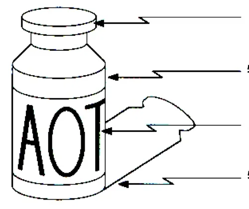
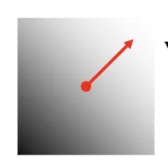
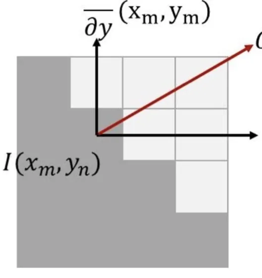
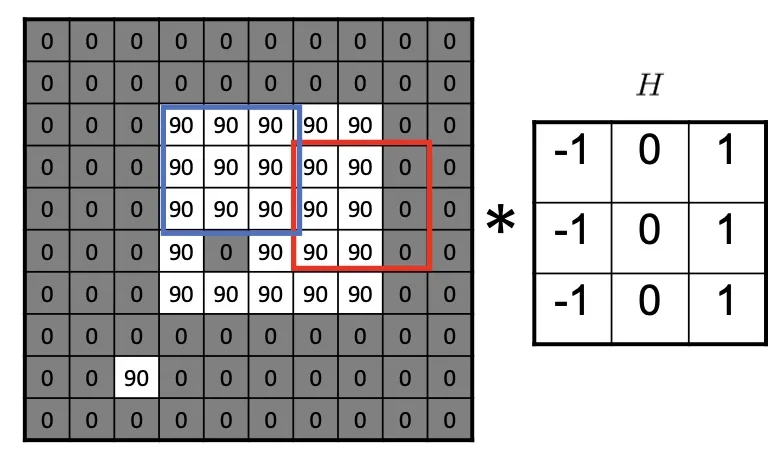
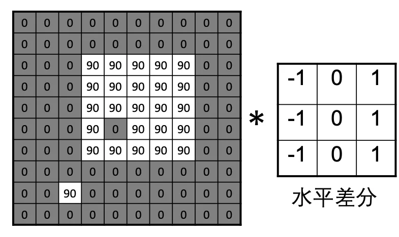
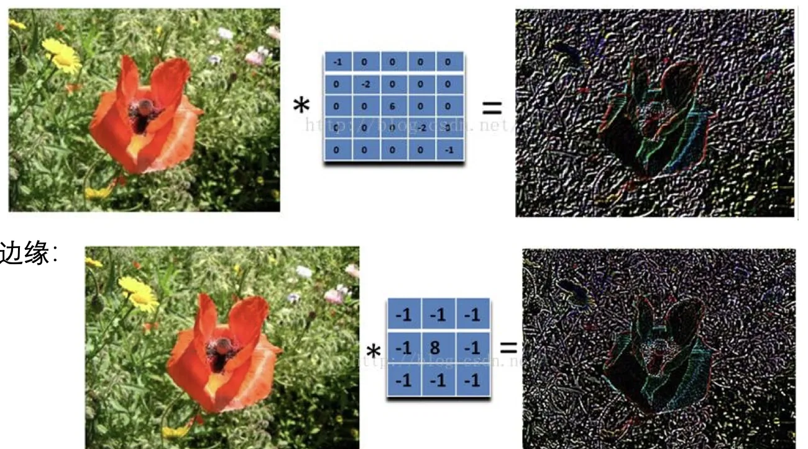
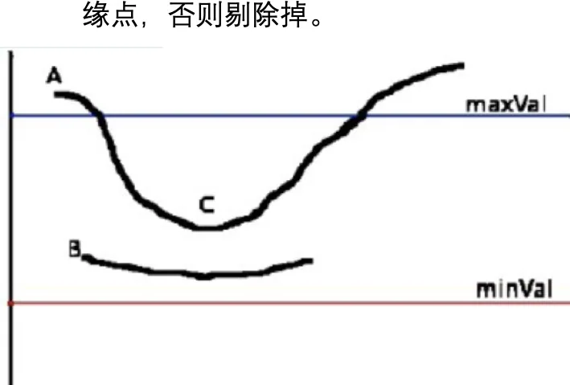
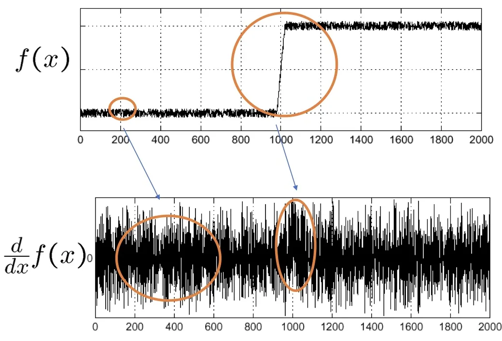
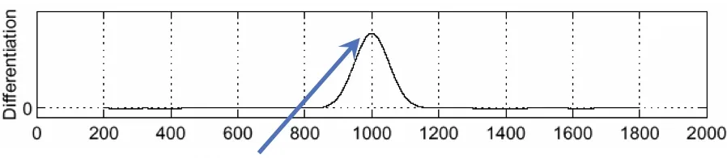

计算机视觉 · 第 2 章 图像处理基础
2.7 图像梯度与边缘检测
前面几节的滤波都在做同一件事：把像素之间的差异压平——均值、中值、高斯，越平滑越好。这一节反过来，把差异本身当成要提取的信息。边缘是像素值发生突变的地方，也是图像中信息最集中的地方；要把它找出来，先得有刻画「变化」的数学工具，再把这套工具搬到离散的像素网格上，最后处理噪声带来的麻烦。整节的线索是：边缘的成因、导数与偏导数、梯度、有限差分与差分算子，最后是 Canny 的四步流程。
1. 边缘：像素值发生突变的地方
边缘是像素值发生突变的地方，也是图像中信息最集中的地方。一幅自然图像里，绝大多数像素与邻居的差别都很小，真正携带结构信息的就是这些突变点——把边缘找出来，等于把图像压缩成轮廓与边界，后面的分割、配准、识别才有起点。课件把边缘的成因归成四类不连续：
- 物体深度不连续：前后物体交叠，遮挡关系发生改变；
- 物体颜色不连续：不同材料、不同物体的交界；
- 物体所受光线不连续：光照与阴影的突变；
- 物体表面形状不连续：同一个物体的朝向发生折转，例如棱边与折角。
四类成因指向同一件事：图像上的突变，来自物理场景中某种真实的不连续。于是本节要回答的问题就变得很具体——如何判断一个像素是否属于边？靠的不是某条人为划定的规则，而是一个能度量「变化快慢」的量。

2. 导数与偏导数：把「变化快慢」写成式子
度量变化最自然的工具是导数。课件第 36 张把一阶导数与二阶导数的定义并列写开：对于函数 f(x)，它的一阶导数记作 f′(x)，二阶导数记作 f″(x)，两者都是通过「自变量走一小步，看函数值改变多少」来定义的。
f′(x) = df(x)/dx
= lim [ f(x+Δx) − f(x) ] / Δx (Δx → 0)
f″(x) = df′(x)/dx
= lim [ f′(x+Δx) − f′(x) ] / Δx (Δx → 0)一阶导数衡量的是函数值随自变量变化的速率；二阶导数是一阶导数的导数，衡量的是「变化的快慢本身在怎么变」。本节随后一直用到的是一阶导数——把两个方向上的偏导数合起来就得到梯度；二阶导数要到后面第 4 章 4.3 节的 LoG 算子那里才会成为主角。
图像不是一元函数：一幅灰度图可以看成二元函数 f(x, y)，两个自变量分别是像素的行下标与列下标。课件第 37 张因此引入偏导数：对 x 的偏导数记作 f′x(x, y)，对 y 的偏导数记作 f′y(x, y)。两者的含义都是「固定住另一个变量，只让这一个变量变化」，求法就是把另一个变量看作常数——对 x 求偏导时 y 不动，衡量的是同一行相邻像素之间的变化；对 y 求偏导时 x 不动，衡量的是同一列上的变化。
3. 图像梯度：方向与大小
两个偏导数各自只说了一个方向上的变化，把它们合起来就是梯度。课件第 37 张给出的定义是：对于二元函数 f(x, y)，梯度是一个向量，表示函数 f(x, y) 在点 (x, y) 处沿着该方向（梯度方向）变化最快。写成式子就是 ∇f(x, y) = ( ∂f/∂x, ∂f/∂y )：方向指向变化最快的那个方向，长度则是沿该方向变化的速率，也就是两个偏导数平方和的平方根。方向与大小这两件事，一个是「往哪儿变」，一个是「变得多快」，后面用起来各有用处。
课件第 38 张用方格里的灰度变化说明「最快速变化的方向」是什么意思：方格里水平方向强度变化最快时，梯度就是水平的；垂直方向强度变化最快时，梯度就是垂直的；45° 方向强度变化最快时，梯度就指向 45°。方向始终跟着「最快的那个方向」走，这正是梯度的定义直接带来的结果。
接着是这一节最实用的一句话：图像梯度计算的是图像像素值变化的速度。于是判断标准水到渠成——对于图像的边缘部分，因为其灰度值变化较大，所以梯度值也较大；对于图像中比较平滑的部分，因为其灰度值变化较小，所以梯度值也较小。「这个像素是不是边缘」由此变成了「这个像素处的梯度值够不够大」。

4. 离散梯度：用有限差分近似导数
导数的定义里有 Δx → 0 这一步，数字图像上做不到：像素按整数下标离散取值，x 只能一格一格地走。课件第 39 张因此改用有限差分——不求极限，直接用相隔一个像素的两个取值之差去近似导数：
∂f/∂x (x, y) ≈ F[x+1, y] − F[x−1, y]
∂f/∂y (x, y) ≈ F[x, y+1] − F[x, y−1]两个式子都只用到目标像素的两个邻居：右边减左边得到水平方向的变化率，下边减上边得到垂直方向的变化率。要注意差分的中心仍然落在 (x, y) 上，而不是落在右邻居或下邻居上，所以同一个像素处横向、纵向的两个变化率可以直接配对使用。

把这两个式子做在图像的每个像素上，就是两次卷积。课件第 40、41、42 张用同一个例子把这件事演示了一遍：第 40 张计算水平方向的差分，用的核三行都是「−1 0 1」；
-1 0 1
-1 0 1
-1 0 1第 41 张计算垂直方向的差分，把同样的思路转 90°，核的三列都是「1 0 −1」。
1 1 1
0 0 0
-1 -1 -1
第 42 张把两个核与两个差分式并排放在一起，紧接着给出本节最重要的一句结论：边缘检测本质上就是一种滤波，区别在于滤波器的选择，滤波的规则是完全一样的。这句话把本节和前面讲卷积的地方接上了：规则没有变，还是把核扣在图像上逐点做加权求和，变的只是核里的系数。所谓「换一种边缘检测算法」，换的其实就是那个 3×3 的核。

5. 对不同方向求导的算子：Prewitt、Sobel 与 Roberts
上面那对核只是众多选择之一。课件第 43 张的标题是「对不同方向进行求导的滤波器」，并给出两条比较结论；第 40、41 张用到的那对核，就是其中的 Prewitt 算子。
第一条结论是：Sobel 算子比 Prewitt 算子边缘检测性能更好。两个算子的形状完全一样，都是两个 3×3 的核，分别求水平与垂直方向的差分，差别在系数：Prewitt 的三行系数相同，等于在差分之前先沿另一个方向做了一次等权平均；Sobel 把中间一行（或中间一列）的系数加倍。
Prewitt Sobel
-1 0 1 -1 0 1
-1 0 1 -2 0 2
-1 0 1 -1 0 1离中心像素越近的行权重越大——这是「距离越近影响越大」的加权平均。加权平均的意义在于抗噪：差分本身就会把噪声一起放大，先平滑一次能压掉一部分，而 Sobel 的加权方式比等权平均更贴近邻域的真实影响，所以在实际图像上表现更好。需要说明的是，原课件只给出了「Sobel 算子比 Prewitt 算子边缘检测性能更好」这一结论，上面两组系数是为了解释这条结论补出来的具体形式。
第二条结论是：Roberts 算子计算对角线上而不是相邻两个像素的差分。Prewitt 与 Sobel 比较的都是「左与右」或「上与下」——两个像素位置相邻；Roberts 比较的是一对对角线上的像素，左上与右下、右上与左下各作一次差。因此它的核只要 2×2：
0 1 1 0
-1 0 0 -1原课件同样只给了这条文字结论，两个 2×2 的核是把这句话写开的结果。把三个算子放在一起看，差别可以归结为两件事：核的大小与参与差分的像素对。核的大小决定了顺带做了多少平滑——2×2 几乎没有平滑，3×3 可以在差分之前先做一次平均；像素对决定了它最敏感的方向——是相邻的左右、上下，还是对角线。这也解释了标题为什么写「对不同方向求导」：一个核只对某一类方向的突变最敏感。
6. 45° 方向的边缘与「所有方向」的边缘
课件第 44 张把「方向」这件事往前推了一步，并列了两种说法：寻找 45° 边缘与寻找所有方向的边缘。理解这两句话的关键在于：一个差分核只在某一个方向上做差分，因此它对该方向的突变最敏感，对别的方向就没那么敏感。
如果关心的边缘恰好是 45° 走向的，就专门拿一个对 45° 方向敏感的核去测，这对应第一种说法；如果各种朝向的边缘都可能出现，就得把多个方向的核都用上，再综合它们的输出，这对应第二种说法。换句话说，「寻找所有方向的边缘」不是某一个神奇的核，而是一组核的合力。
这也让第 43 张的标题落了地：挑选算子，本质上是挑选「对哪些方向敏感」。Prewitt 与 Sobel 各出一对核，覆盖水平与垂直两个方向；把对角方向补上，方向才算齐。

7. Canny 边缘检测器的四个步骤
到这里，边缘检测的基本框架已经完整：定一个（或一组）差分核，与原图卷积，梯度大的地方就是边缘。但这个框架在真实图像上还不够好用——噪声同样会被差分放大，而且算出来的边缘往往是一条多像素宽的带，位置说不清。课件第 45 张与第 46 张是同一页的两个版本，给出的 Canny 边缘检测器正是针对这两点设计的，它把流程分成四步：图像降噪、计算图像梯度、非极大值抑制、双阈值筛选。四步串成一条链，前一步的输出就是后一步的输入。
（1）图像降噪
第一步为什么是降噪？因为差分的对象是相邻像素之差，而噪声本身就是相邻像素之间没有规律的跳变，在数值上它和边缘长得一模一样，都会被差分放大成响应。若不先处理，梯度图上会布满并不对应任何真实边缘的亮点。所以要先在求导之前把图像平滑一遍（例如前面讲过的高斯滤波），把随机的抖动平均掉。这一步也决定了后面所有步骤的工作对象：它们处理的都是降噪之后的那张图。
（2）计算图像梯度
第二步是在降噪后的图上求梯度，做法与本节前面的有限差分完全一致：水平、垂直各算一次差分，再合成梯度。输出有两个：梯度强度，表示这个点的像素值变化有多剧烈，它是判断「是不是候选边缘」的依据；梯度方向，表示朝哪个方向变化最快，它是下一步要用的输入——非极大值抑制必须沿着方向去比较。
（3）非极大值抑制
前两步算出的梯度图有一个毛病：一条边缘附近的几个像素都会得到较大的梯度值，于是边缘被描成多像素宽的一条带，位置说不准。非极大值抑制就是用来瘦身的：对每个「边缘」像素，沿着它的梯度方向，跟邻域像素的梯度强度进行比较，如果是局部极大值，则视为边缘像素，否则丢弃。它的效果是将多像素宽的边缘减少至一个像素宽度。之所以沿梯度方向比较，是因为梯度方向正是跨过边缘的方向，在这个方向上取到局部极大值的位置，就是边缘最准确的位置；而沿着边缘走向（与梯度方向垂直）比较没有意义，因为那里的像素值几乎不变。这一步只做筛选，不改变任何像素的取值。
（4）双阈值筛选
最后一步要把噪声留下的残余响应剔掉。只用一个阈值会进退两难：阈值定高了，对比度低的真实边缘会被一起丢掉，轮廓断成几截；阈值定低了，噪声的响应又会被当成边缘留下。课件给出的办法是使用上下两个阈值来筛选：大于上阈值的认为是边缘点，小于下阈值的认为是非边缘点；至于落在两个阈值之间的像素，则看它是否与确定为边缘的点相邻接——相邻就认定为边缘点，否则丢弃。这样，一条强边缘旁边那些较弱的延续部分能被保住，轮廓不容易断；而孤零零待在噪声里的中等响应，因为接不上任何确定边缘，会被清掉。

8. 边缘检测前为什么要先降噪
把 Canny 的第一步单独拿出来看，就是这一问：边缘检测前为什么要降噪？课件第 47 张用一维信号和它的导数来说明这件事——信号的横轴是像素位置，纵轴是灰度值，求导之后，原本平缓的区间里会冒出许多细小的起伏。这些起伏来自噪声，却和真实边缘一样表现为「有变化」，一旦被当成边缘，结果就是满图的假轮廓。
课件第 48 张给出了标准的处理顺序：先由高斯函数构造一个核，与原图做卷积得到高斯平滑的图像，再在这张图上求梯度，最后定位到边缘点。顺序这样安排的道理在于：平滑把相邻像素之间随机的、小尺度的抖动平均掉，而边缘处那种成片的、有规律的跳变会被保留下来，于是求导之后，梯度图上只剩下边缘处的响应。这也正是高斯滤波在本章里的用处所在——平滑本身不是目的，为后面求导提供一个干净的输入才是。


本节小结
- 边缘是像素值发生突变的地方，也是图像中信息最集中的地方；成因可以归为物体深度、颜色、所受光线、表面形状四类不连续，它们都是真实场景中的不连续在成像结果上的表现。
- 刻画变化用导数：一元函数有一阶、二阶导数；图像的灰度是二元函数 f(x, y)，对 x、对 y 各有一个偏导数，合起来就是梯度——方向指向变化最快的方向，大小是沿该方向的变化速率。
- 图像是离散的，用有限差分近似导数：∂f/∂x ≈ F[x+1, y] − F[x−1, y]，∂f/∂y ≈ F[x, y+1] − F[x, y−1]；写成 3×3 的核就是一次卷积，所以边缘检测本质上就是一种滤波，换算法就是换核。
- Prewitt 与 Sobel 都是 3×3、分别对水平和垂直方向求差分的算子，Sobel 给中间行（列）加倍权重因而性能更好；Roberts 比较的是一对对角线上的像素，核只有 2×2。差别的来源是核的大小与参与差分的像素对，也就是「对哪些方向敏感」。
- 要找 45° 边缘就针对该方向选核，要找所有方向的边缘就把多个方向的核都用上——方向齐了，边缘才不会漏。
- Canny 检测器是一条四步流程：降噪（噪声也是突变，会被差分放大）→ 计算梯度（给出强度与方向）→ 非极大值抑制（沿梯度方向取局部极大，把多像素宽的边缘压成一个像素宽）→ 双阈值筛选（上阈值定边缘、下阈值靠与确定边缘相邻接来补回弱边缘）。这也回答了边缘检测前为什么必须先降噪。